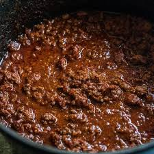

Granny's Chili

Description
This is a thick, no beans chili. This recipe makes a large amount and can be scaled down.
Ingredients
- 10 pounds ground meat
- 3 (16 oz) packs of Guidry's Creole Seasoning (onions, bp, celery, etc)
- 1 can Rotel
- 2 (8 oz) cans of tomato sauce
- 3 (6 oz) cans of tomato paste
- 1 cup roux
- 10 oz chili powder
- Salt, black pepper, red pepper to taste
Steps
- Brown gound meat thoroughly
- Add creole seasoning and cook until onions are clear
- Add remaining ingredients
- Cook 5-6 hours
- Season to taste